Production-grade retrieval-augmented generation that refuses to hallucinate. Hybrid dense and sparse retrieval with fusion and reranking, strictly grounded answers with verified citations, and full latency, cost, and quality observability — delivered as a Dockerized API with a Next.js operations dashboard.
Enterprise teams need question-answering over policies, handbooks, and runbooks — but generic LLM chat answers confidently even when evidence is missing. Without citation proof, verification, and operational visibility into latency, tokens, and cost, such systems cannot be trusted or operated in production. GroundedDocs was designed to close that gap: every claim cited, every citation verified, every query observed.
Local multilingual embeddings over Qdrant paired with an in-memory BM25 index, fused with weighted Reciprocal Rank Fusion and refined by a cross-encoder reranker with an LLM-judge fallback. Retrieval method is switchable for evaluation and transparency.
A strict grounded prompt constrains the model to numbered passages only, with a refusal sentinel for unanswerable questions. Each sentence-level claim is then checked against its cited passage by a dedicated verification model, with unsupported citations flagged rather than hidden.
FastAPI service with API-key auth, rate limiting, request tracing, per-stage latency breakdown, token and cost accounting, SQLite query logging, aggregate metrics, zero-downtime reindexing, and a frozen versioned API contract.
Demonstrates senior-level LLM systems judgment: measurement over assumption, verification over trust, and honest handling of uncertainty. The project pairs strong quantitative results with production concerns — security, cost control, reproducibility, and operability — making it directly relevant to applied AI and enterprise AI engineering roles.
app/core/ — Pure ingestion, retrieval, generation, and evaluation logic.app/services/ — Model wiring, retrieval and generation services.app/store/ — Vector storage, index management, and query logging.app/api/ — Routes, schemas, auth, rate limiting, and errors.frontend/ — Next.js dashboard application.scripts/ — Seeding and evaluation entry points.docs/ — API contract and phased build narrative.tests/ — Unit and integration suites.Configure the API key, start Qdrant, run the FastAPI service, then launch the Next.js dashboard. Interactive Swagger docs and a health endpoint make verification immediate.
One Docker Compose command builds and starts the API and vector database, seeds the sample corpus, and exposes health checks. The frontend deploys independently against the versioned API contract.
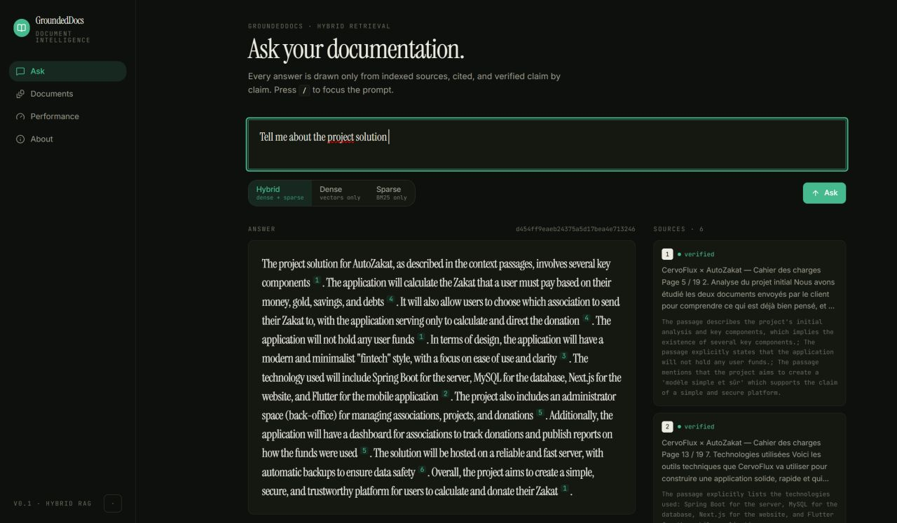
Ask console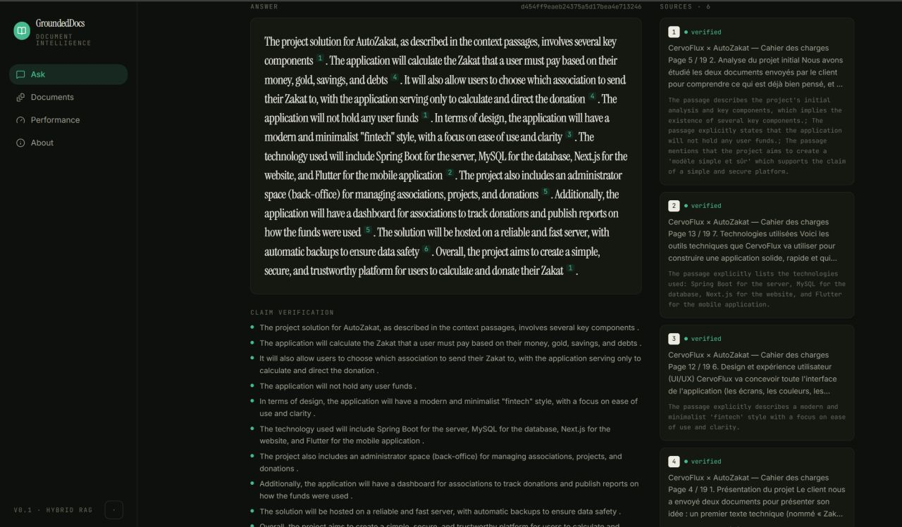
Claim verification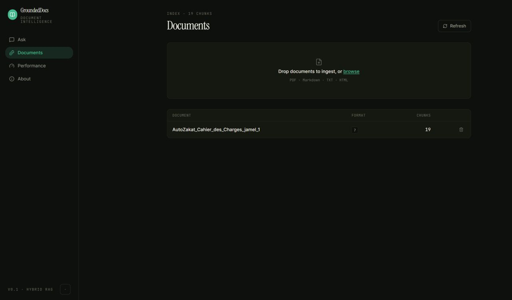
Documents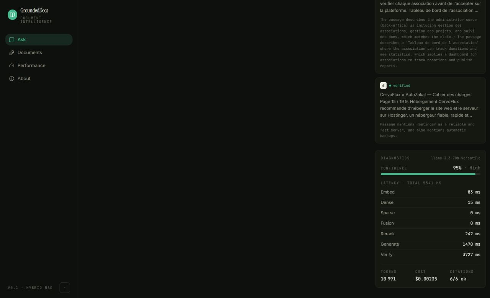
Dashboard detail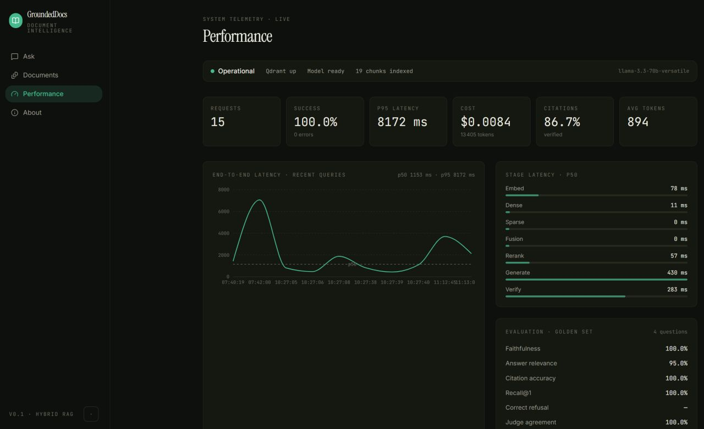
Dashboard detail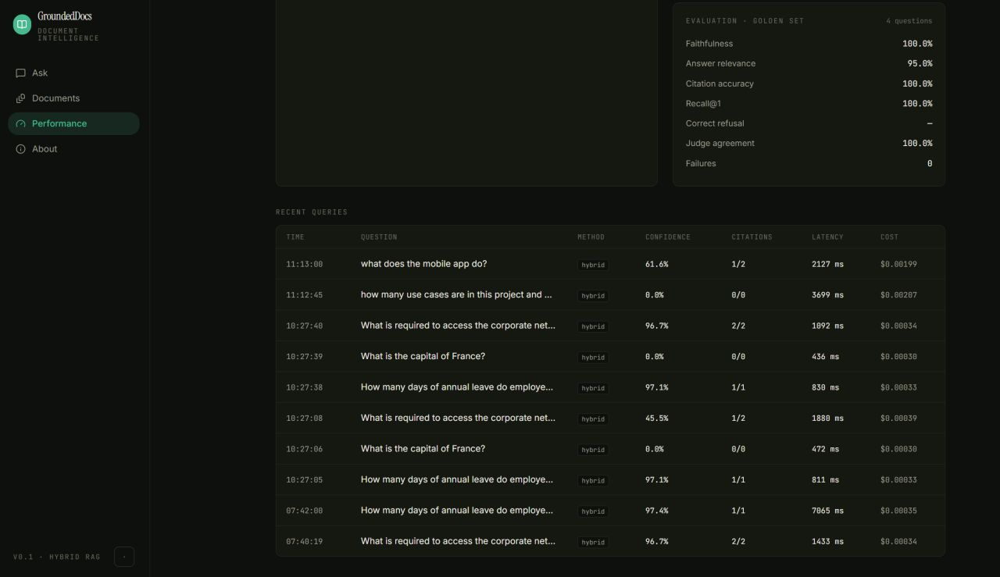
Dashboard detail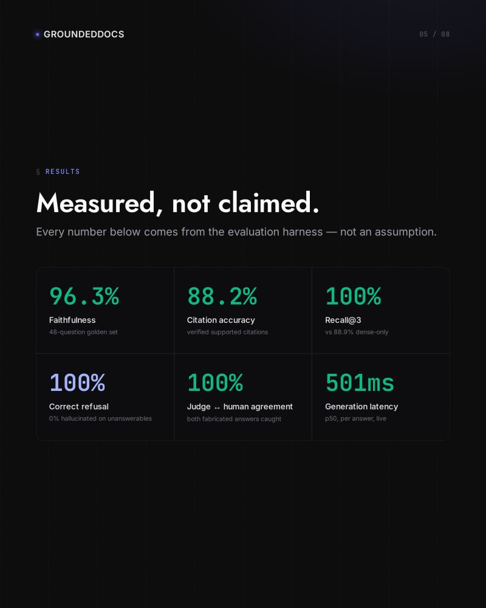
Measured results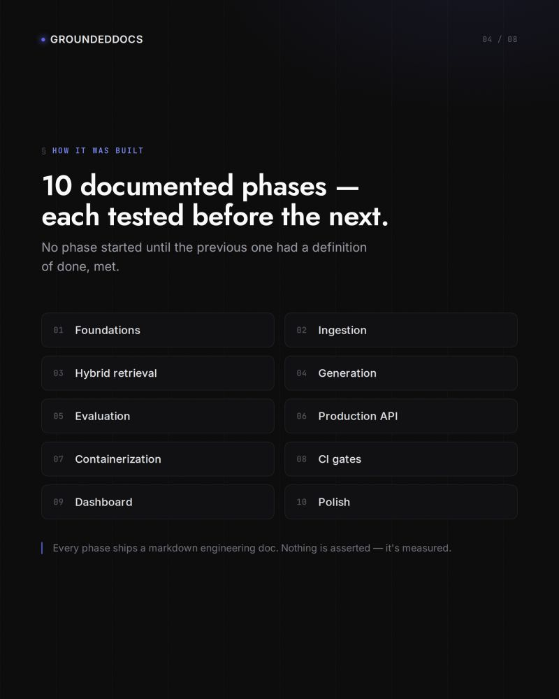
Dashboard detail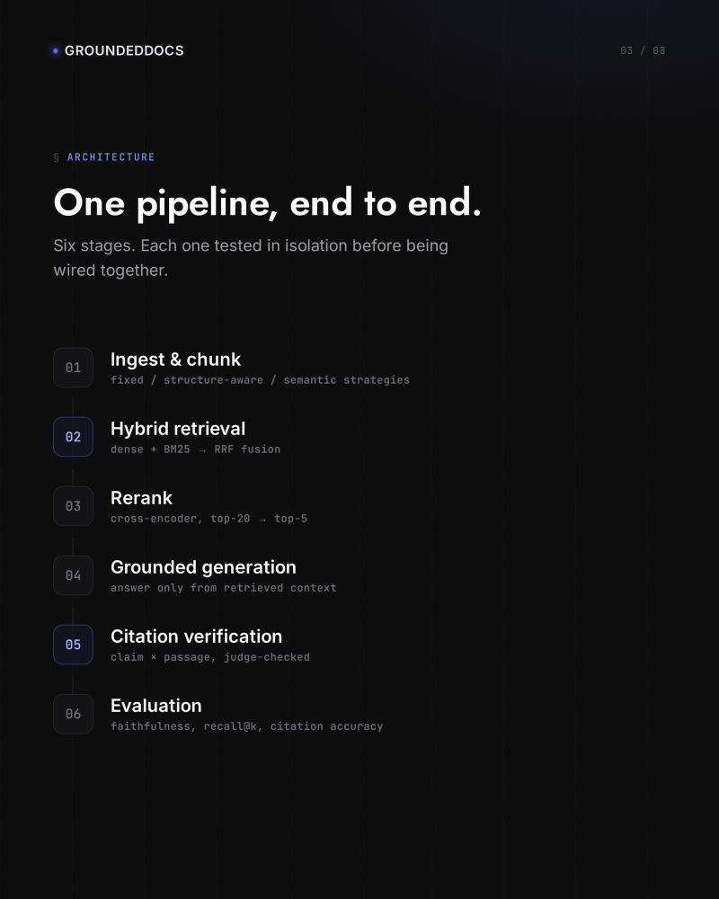
Dashboard detail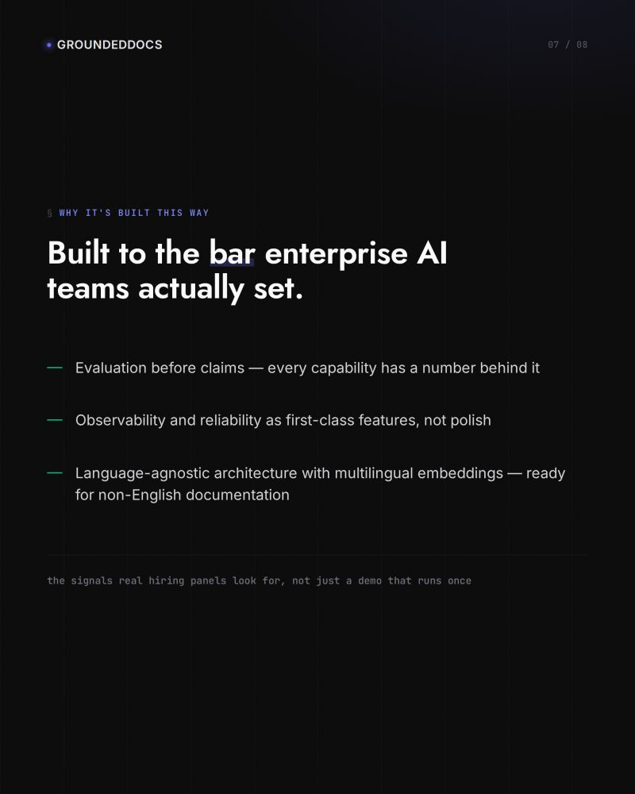
Dashboard detail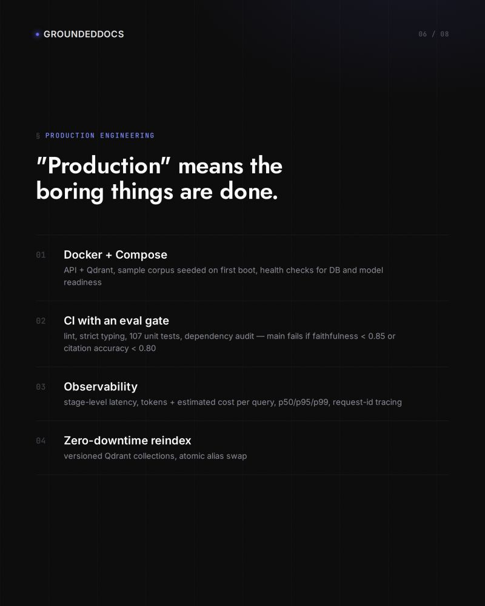
Dashboard detail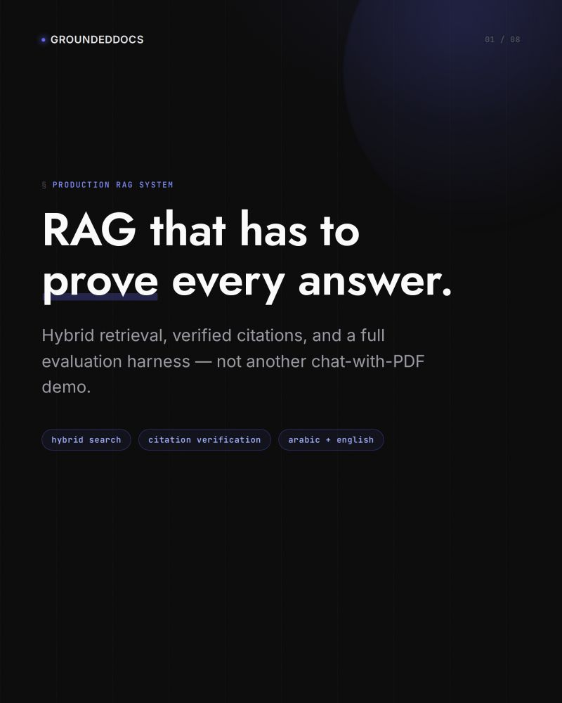
Dashboard detail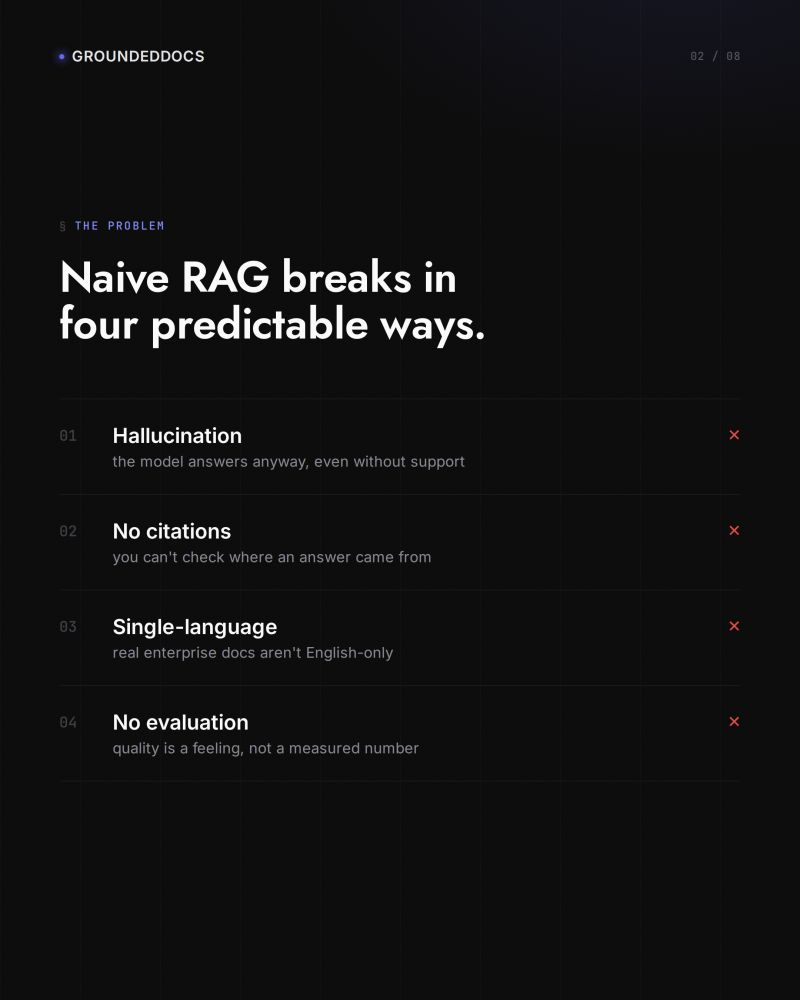
Dashboard detail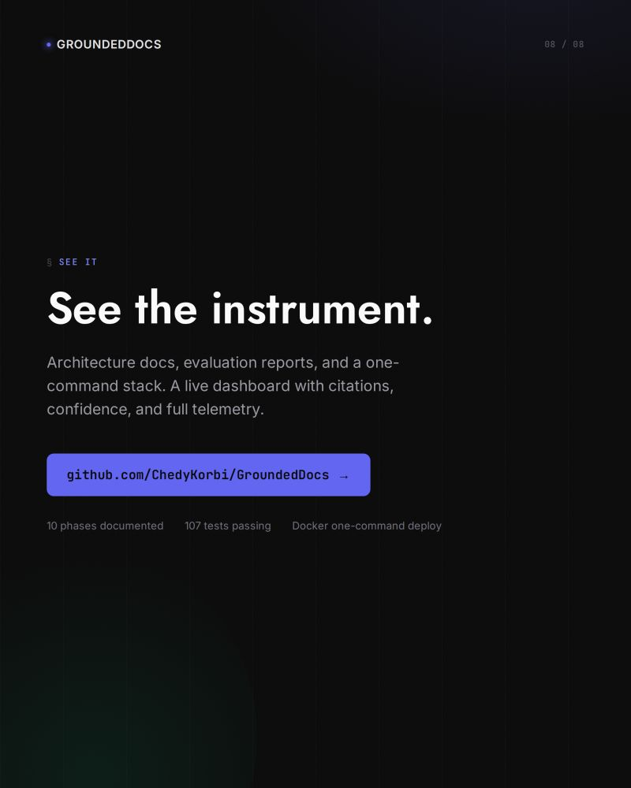
Open source